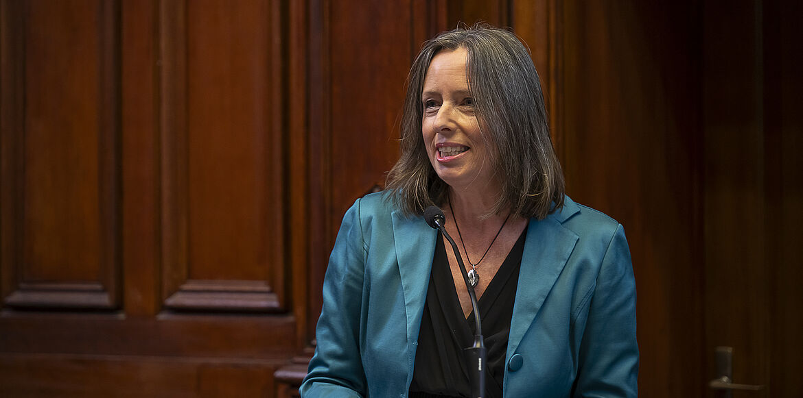

Le prix André Lebrun décerné à Rose-Marie De Coster
FaSEST — Université de Lille.
Lire l’article de la FaSEST ↗Parcours remarquable de la Formation Continue.
Lauréate du prix André Lebrun en 2024, à l’occasion de mon parcours de formation à l’Université de Lille.

FaSEST — Université de Lille.
Lire l’article de la FaSEST ↗La présentation du prix et du parcours de la lauréate, publiée le 7 juin 2024.
Lire le communiqué (PDF) ↗La liste publiée par l’ASAP — Université de Lille.
Consulter la publication ↗